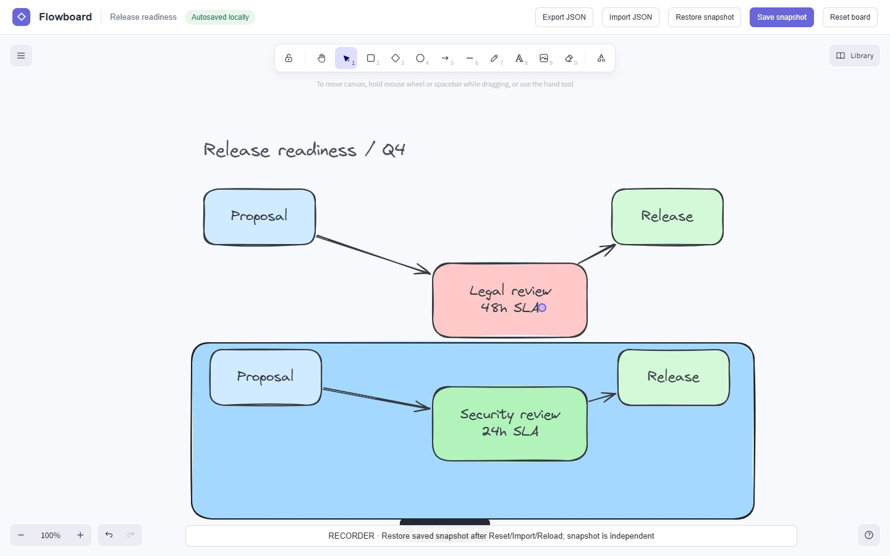
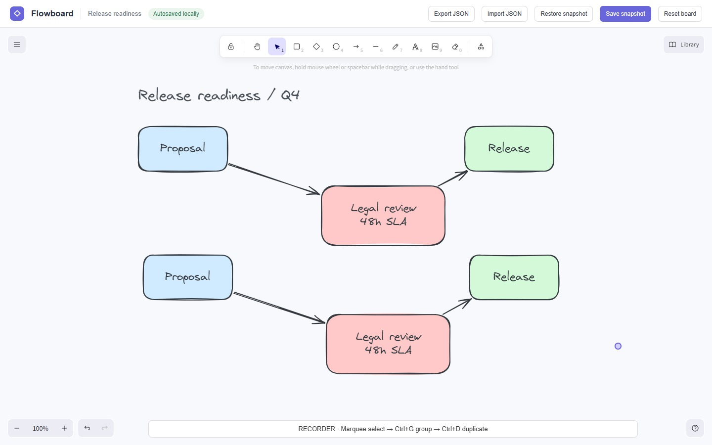
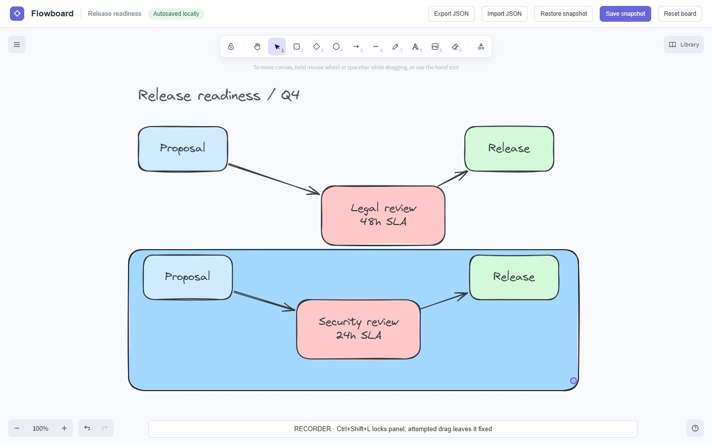
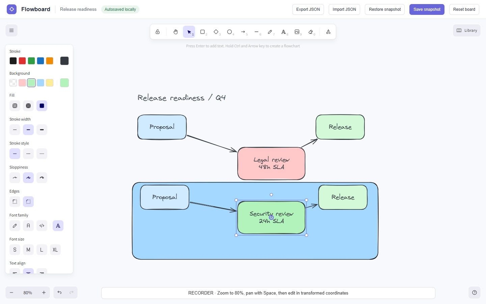
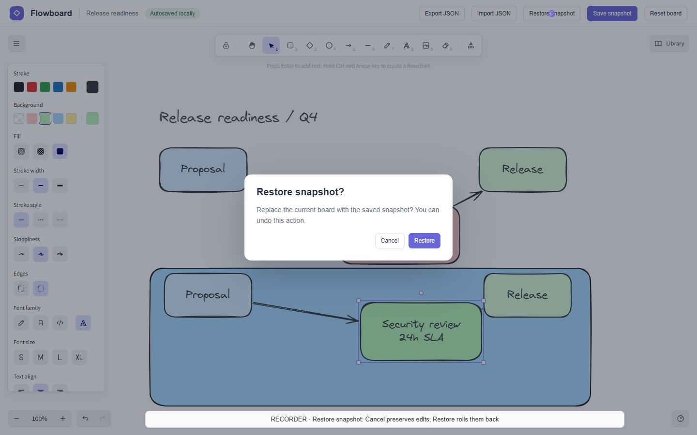
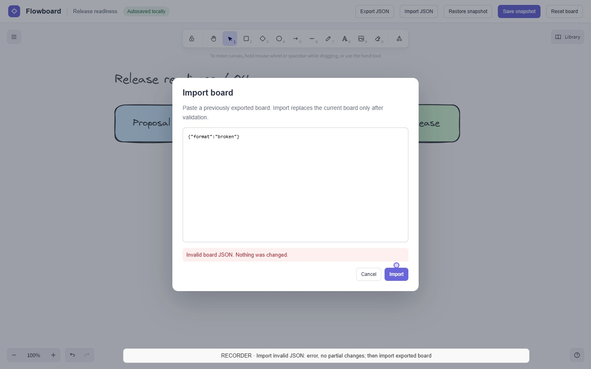
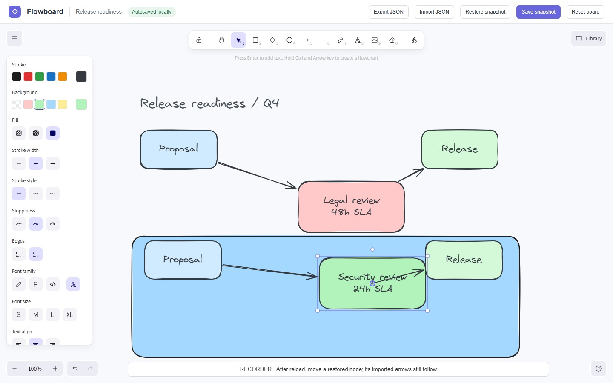

复制一张“关系图”
节点、标签和箭头需要新身份。移动副本不能误改原图，解组不能破坏绑定，缩放后命中仍要准确。
ORIGINAL VIDEO → EDITABLE SYSTEM
从一段真实录屏重建流程图编辑器：复制后连线仍正确，撤销后历史有分支，导入和刷新后仍能继续编辑。

01 / THE DEMONSTRATION
同一张图经历编辑、复制、撤销、快照与 JSON 往返；恢复之后，再次拖动验证关系仍然成立。
1440 × 900 · 25 fps · 132.76 s · 下方 RECORDER 提示和紫色光标仅为录制辅助，不要求模型复现。章节时间为近似导航。
02 / WHY A NEW CASE
节点、标签和箭头需要新身份。移动副本不能误改原图，解组不能破坏绑定，缩放后命中仍要准确。
拖动是一个动作，删除组是一个事务。Undo 后的新编辑必须清除旧 Redo 分支，恢复快照也可撤销。
快照独立于自动保存。非法导入不破坏当前图，正确导入不叠加对象，刷新之后连线继续跟随节点。
采用固定版本 Excalidraw 0.18.1 构建参考编辑器；Flowboard 外壳、初始数据、流程、录屏和 checklist 均为本次设计。未复用 WebCompass 视频或题目。未演示的协作、Library 等工具不计分。参考源码用于复核，不向候选 runner 开放。
03 / FROZEN CHECKLIST
53 个功能 probe 逐个按 0/1 计分；视觉按固定锚点，在多个指定状态分别评分。缺失取证必须补证，不能直接算模型失败。
参数复测改变节点、短标签和位移，但不添加隐藏功能。恢复后的再次编辑、分支历史和错误回滚单独取证。两个匿名 LLM judge 核对证据并评价视觉，分歧要复核；无证据时总分为 N/A。没有“最高 79 分”的人为封顶。
04 / TWO-MODEL PILOT · 2026-10-22
按最新要求，本轮只测试 GPT-6-Luna 和 GPT-6.1-Sol。统一输入、工具、15 轮生成预算与冻结 checklist；每模型一个有效试次。
分数由 53 个功能断言（80 分）和 15 个视觉评分点（覆盖 13 个参考状态）（20 分）组成，没有后加封顶。两名 judge 为 Luna 与 Sol，匿名且独立调用，但同家族和自评偏差仍存在。分歧由当前 Codex 代理依据原始证据裁定，并非独立人工认证。
网关中断后 Luna 从原历史续跑，仍共 15 轮；Kimi、GLM 的早期中断记录保留并退出本轮，不计 0 分。尚未做每模型 3 次重复运行，结论仅限这两个试次。
05 / OBSERVED BROWSER ACTIONS
选择模型和操作，查看真实浏览器截图、动作及错误。补测和定位修正的前次记录均保留；候选代码在验收期间没有修改。
06 / EVIDENCE-BASED ANALYSIS
07 / GENERATION TRAJECTORY
15 轮是模型响应轮数；一轮可含多个工具调用。工具上限 120 次。表中输出 token 是网关返回的实际值，包含其计入的推理 token；9000 的单次请求上限为网关 advisory，未作为硬上限生效。
08 / REFERENCE STATES






09 / REPRODUCIBILITY